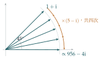

STEP III 1987，第 3 題
繼續之前，請先閱讀題目（原題為英文）。題目載於 STEP Support Programme 的題目資料庫： step.maths.org/questions/87-s3-q3
引子
1706 年，倫敦數學家梅欽（John Machin）徒手把 \(\pi\) 計算到小數點後 \(100\) 位，在此之前從未有人接近過這個紀錄。他的祕訣就是第 (ii) 部分的公式：這條公式把 \(\frac\pi4\) 用幾個角表示出來，而這些角的正切都是很小的分數。分數愈小，級數（series）\(\tan^{-1}x = x - \frac{x^3}{3} + \frac{x^5}{5} - \cdots\) 收斂（converge）得愈快。梅欽公式及其各種變體，在其後兩個半世紀一直是計算 \(\pi\) 的標準方法，直到電腦和 第 2.6 節 的方法出現才被取代。
這條公式看起來像是三角恆等式（identity）變出來的奇蹟。這道題目卻說明，它其實是關於複數（complex number）乘法的一個事實：複數相乘時，它們的輻角（argument）相加。只要把幾個實部、虛部都是整數的複數乘一次，整條公式就得證。
動筆之前
\(5 - \mathrm{i}\) 的輻角是甚麼？\(1 + \mathrm{i}\) 的呢？複數相乘時，輻角會怎樣變化？
\(\arg(5 - \mathrm{i}) = -\tan^{-1}\frac15\)，是一個很小的負角，而 \(\arg(1 + \mathrm{i}) = \frac\pi4\)。複數相乘時，模（modulus）相乘，輻角相加（可相差 \(2\pi\) 的倍數）。因此 \[\arg\bigl((5 - \mathrm{i})^4(1 + \mathrm{i})\bigr) = \frac\pi4 - 4\tan^{-1}\frac15 \quad\text{（可能再加上若干個 } 2\pi\text{）}.\] 如果我們能算出這個乘積，再用另一個方法求出它的輻角，就得到一條恆等式。
逐步解題
階段 1 模的上下界
求上界（upper bound）時，把兩邊平方。求下界（lower bound）時，把 \(|x|\cos\alpha + |y|\sin\alpha\) 看成兩個向量的點積（dot product）。
上界：\((|x| + |y|)^2 = x^2 + y^2 + 2|x||y| \geq x^2 + y^2 = |z|^2\)，而且兩邊都非負，所以 \(|z| \leq |x| + |y|\)。
下界：\(|x|\cos\alpha + |y|\sin\alpha\) 是長度為 \(|z|\) 的向量 \((|x|, |y|)\) 與單位向量（unit vector）\((\cos\alpha, \sin\alpha)\) 的點積。點積不會超過兩個向量長度之積，所以它不超過 \(|z|\)。（代數證法：\(|z|^2 - (|x|\cos\alpha + |y|\sin\alpha)^2 = (|x|\sin\alpha - |y|\cos\alpha)^2 \geq 0\)。）■
階段 2 關鍵的乘法
先計算 \((5 - \mathrm{i})^2\)，再把結果平方，然後乘以 \(1 + \mathrm{i}\)。
\((5 - \mathrm{i})^2 = 25 - 10\mathrm{i} - 1 = 24 - 10\mathrm{i}\)。於是 \((24 - 10\mathrm{i})^2 = 576 - 480\mathrm{i} - 100 = 476 - 480\mathrm{i}\)。最後 \[(476 - 480\mathrm{i})(1 + \mathrm{i}) = 476 + 476\mathrm{i} - 480\mathrm{i} + 480 = 956 - 4\mathrm{i}.\]
現在比較輻角。\(956 - 4\mathrm{i}\) 的輻角是甚麼？你憑甚麼肯定沒有多出 \(2\pi\) 的倍數？
\(956 - 4\mathrm{i} = 4(239 - \mathrm{i})\)，其輻角為 \(-\tan^{-1}\frac{1}{239}\)。因此 \[\frac\pi4 - 4\tan^{-1}\frac15 = -\tan^{-1}\frac{1}{239} + 2k\pi\] 其中 \(k\) 是某個整數。但 \(0 < \tan^{-1}\frac15 < \frac15\)，所以左邊介乎 \(\frac\pi4 - \frac45\) 與 \(\frac\pi4\) 之間，即大約介乎 \(-0.02\) 與 \(0.79\) 之間；而右邊除去 \(2k\pi\) 後介乎 \(-0.005\) 與 \(0\) 之間。由於 \(2\pi\) 遠大於兩者的差距，故 \(k = 0\)。移項後得 \[\frac\pi4 = 4\tan^{-1}\frac15 - \tan^{-1}\frac{1}{239}. \qed\] 圖 5.1.1 顯示了整個過程：由 \(45^\circ\) 出發，每乘一次 \(5 - \mathrm{i}\) 就順時針旋轉約 \(11.3^\circ\)，乘了四次之後，剛好越過實軸，只過了 \(0.24^\circ\)。

階段 3 第二條公式
依樣畫葫蘆，這次應該計算哪一個乘積？
考慮 \((4 + \mathrm{i})^3(20 + \mathrm{i})(1985 + \mathrm{i})\)，它的輻角是 \(3\tan^{-1}\frac14 + \tan^{-1}\frac{1}{20} + \tan^{-1}\frac{1}{1985}\)。現在 \((4 + \mathrm{i})^2 = 15 + 8\mathrm{i}\)，所以 \((4 + \mathrm{i})^3 = (15 + 8\mathrm{i})(4 + \mathrm{i}) = 52 + 47\mathrm{i}\)。於是 \((52 + 47\mathrm{i})(20 + \mathrm{i}) = 1040 + 52\mathrm{i} + 940\mathrm{i} - 47 = 993 + 992\mathrm{i}\)，而 \[(993 + 992\mathrm{i})(1985 + \mathrm{i}) = (1971105 - 992) + (993 + 1969120)\mathrm{i} = 1970113 + 1970113\mathrm{i}.\] 實部（real part）等於虛部（imaginary part），所以輻角是 \(\frac\pi4\)。三個角都是很小的正角（它們的和小於 \(3 \cdot \frac14 + \frac1{20} + \frac{1}{1985} < 1 < 2\pi\)），所以毋須擔心 \(2\pi\) 的倍數，公式由此得證。■
回顧
相乘時輻角相加。單憑這一個事實，高斯整數（Gaussian integers）的乘積就變成了角與角之間的恆等式。
留意 \(2\pi\) 的倍數。輻角只能確定到相差 \(2\pi\) 的倍數，所以每條恆等式都要靠估計大小來確定那個倍數。
整數包辦一切。所有運算都只涉及整數；關於 \(\pi\) 的恆等式是精確地得出的，沒有用到任何近似。
背後的數學
為甚麼梅欽公式這樣適合用來計算？級數 \(\tan^{-1}x = x - \frac{x^3}{3} + \frac{x^5}{5} - \cdots\) 在 \(|x| \leq 1\) 時收斂，但在 \(x = 1\) 時慢得令人難受：要用 \(1 - \frac13 + \frac15 - \cdots\) 求得 \(\frac\pi4\) 的三位小數，大約需要一千項。取 \(x = \frac15\) 時，每一項約為前一項的 \(25\) 分之一，即每項大約帶來 \(1.4\) 位小數；取 \(x = \frac{1}{239}\) 時，每項約 \(4.8\) 位。梅欽的 \(100\) 位小數，只需要第一個級數約 \(70\) 項和第二個級數約 \(20\) 項。1873 年，William Shanks 用一條梅欽型公式算出 \(707\) 位，單是運算就花了多年時間；到了 1944 年，人們發現他在第 \(528\) 位出了錯，其後的數字全部不對。
再談高斯整數
形如 \(a + b\mathrm{i}\) 而 \(a\)、\(b\) 為整數的數，就是 第 1.6 節 的高斯整數。\(5 - \mathrm{i}\) 之所以這樣好用，原因在於一個因數分解（factorisation）：\(239^2 + 1 = 57122 = 2 \times 13^4\)，在高斯整數中寫成 \((239 + \mathrm{i})(239 - \mathrm{i}) = (1 + \mathrm{i})(1 - \mathrm{i})\,(3 + 2\mathrm{i})^4(3 - 2\mathrm{i})^4\)，而 \(5 - \mathrm{i} = (1 - \mathrm{i})(3 + 2\mathrm{i})\) 正是由同一批高斯質數（Gaussian primes）組成的。尋找梅欽型公式，其實就是把形如 \(n^2 + 1\) 的數作因數分解的問題。1899 年，Carl Størmer 正是用這個想法證明了：形如 \(\frac\pi4 = a\tan^{-1}\frac1m + b\tan^{-1}\frac1n\) 而 \(a\)、\(b\)、\(m\)、\(n\) 為整數的公式只有四條，即梅欽的一條，以及歐拉（Euler）、Hermann 和 Hutton 分別發現的三條。
旋轉
乘以一個模為 \(1\) 的複數，就是把平面旋轉（rotation）。正因如此，凡是涉及旋轉和角的事情，複數都是最自然的語言：由本章稍後的幾何，到電機工程中的交流電，以至量子力學中的波函數，莫不如此。在 第 4.2 節 中，\(\tan^{-1}\) 的加法公式（addition formula）來自一個巧妙的代換（substitution）；在這裏，它來自複數的乘法。兩者其實是同一個事實，只是從不同的角度去看。
思維技巧
角的和之間的恆等式，就是乘積的輻角之間的恆等式。把乘積精確地算出來，再讀出它的輻角。
複數的運算機械而精確，而處理反三角函數（inverse trigonometric functions）則容易出錯。把後者轉化為前者，往往是最快捷的證明途徑。
延伸練習
一個近親。試做 STEP II 2000，第 4 題。這道題用與本節相同的方法，證明另一條關於 \(\frac\pi4\) 的反正切公式：把複數相乘，然後讀出輻角。
歐拉公式。考慮 \((2 + \mathrm{i})(3 + \mathrm{i})\)，證明 \(\tan^{-1}\frac12 + \tan^{-1}\frac13 = \frac\pi4\)。
Hutton 公式。證明 \(\frac\pi4 = 2\tan^{-1}\frac13 + \tan^{-1}\frac17\)。
要多少項？估計一下，要把 \(\pi\) 計算到小數點後 \(20\) 位，梅欽公式中的兩個級數各需要多少項。然後用計算機實際算出最初幾位。
延伸閱讀
Jonathan Borwein & Peter Borwein, Pi and the AGM（Wiley）。書中載有梅欽型公式的歷史。
Jörg Arndt & Christoph Haenel, Pi Unleashed（Springer）。生動地介紹古今各種計算 \(\pi\) 的方法。
Tristan Needham, Visual Complex Analysis（Oxford University Press）。要從幾何角度理解複數，這是最好的一本書。第 1 章講的就是乘法即旋轉加縮放。